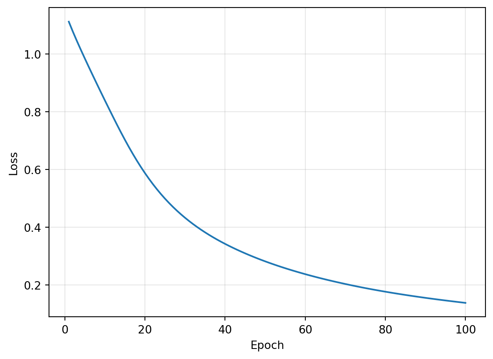

import torch
import torch.nn as nn
import pandas as pd
import matplotlib.pyplot as plt실습 3: 학습 루프를 직접 만든다

오늘 할 일 — 90분
실습 2에서는 신경망을 만들고 출력을 계산했다. 오늘은 예측과 정답으로 손실을 구하고, 가중치를 갱신하는 학습 루프를 작성한다. 펭귄의 네 가지 측정값으로 종을 분류하는 모델을 학습시킨다.
대응 이론: Ch03 손실함수와 경사하강법. Colab 기본 CPU 런타임에서 위에서부터 실행한다. 데이터 준비와 그래프 코드는 제공하며, 학습 코드는 함께 작성한다.
| 시간 | 내용 |
|---|---|
| 0–10분 | 이론의 기울기를 backward()로 계산 |
| 10–25분 | 데이터 확인과 분류 모델 구성 |
| 25–35분 | 예측과 정답으로 손실 계산 |
| 35–60분 | 한 번 갱신한 뒤 학습 루프로 반복 |
| 60–80분 | 학습 루프 직접 작성·학습률 비교 |
| 80–90분 | 질문·오류 해결·정리 |
1. 이론의 기울기를 코드로 구하기 — 10분
이론에서 사용한 \(J(w)=(w-2)^2\)를 다시 보자. \(w=4\)에서 손실은 4, 기울기는 \(J'(4)=4\)다. 이를 파이토치로 계산한다.
requires_grad=True: 이 텐서에 대한 기울기를 계산하도록 설정한다.loss.backward(): 손실 계산을 거슬러 기울기를 구한다.w.grad: 계산된 기울기가 저장되는 속성이다.
w = torch.tensor(4.0, requires_grad=True)
loss = (w - 2) ** 2
loss.backward()
print("손실:", loss.item())
print("기울기:", w.grad.item())손실: 4.0
기울기: 4.0.item()은 값 하나인 텐서를 파이썬 숫자로 꺼낸다. 학습률이 0.1이면 다음 가중치는 \(4-0.1\times4=3.6\)이다. backward()는 기울기를 구하며, 가중치 갱신은 별도로 해야 한다.
잠깐 확인: 위 셀의 시작값을 0.0으로 바꿔 실행한다. 기울기는 얼마이며, 손실을 줄이려면 가중치를 늘려야 하는가, 줄여야 하는가?
2. 데이터에 맞게 모델 만들기 — 15분
2.1 입력과 정답 확인
이제 펭귄 분류에 적용한다. 한 마리의 측정값 네 개를 입력받아 세 종 중 하나를 예측한다.
| 구분 | 내용 |
|---|---|
| 입력 4개 | 부리 길이, 부리 깊이, 날개 길이, 몸무게 |
| 정답 번호 | Adelie = 0, Chinstrap = 1, Gentoo = 2 |
| 모델 출력 3개 | 각 종에 대한 점수 |
아래는 데이터 준비용 제공 코드다. pandas로 표를 읽고, 필요한 열을 텐서로 바꾼다. 입력값은 단위에 따른 크기 차이를 줄이도록 표준화한다. 셀을 실행한 뒤 X와 y의 형태를 확인한다.
url = "https://raw.githubusercontent.com/mwaskom/seaborn-data/master/penguins.csv"
features = ["bill_length_mm", "bill_depth_mm", "flipper_length_mm", "body_mass_g"]
data = pd.read_csv(url).dropna(subset=features + ["species"])
X = torch.tensor(data[features].to_numpy(), dtype=torch.float32)
X = (X - X.mean(dim=0)) / X.std(dim=0)
labels = data["species"].map({"Adelie": 0, "Chinstrap": 1, "Gentoo": 2})
y = torch.tensor(labels.to_numpy(), dtype=torch.long)
print("입력:", X.shape)
print("정답:", y.shape)입력: torch.Size([342, 4])
정답: torch.Size([342])X는 행이 데이터, 열이 입력 변수인 표다. y에는 각 행의 정답 번호가 하나씩 들어 있다.
2.2 입력 4개, 은닉층 8개, 출력 3개
nn.Linear(입력 개수, 출력 개수)로 층을 만들고, nn.Sequential로 순서대로 연결한다. 은닉층의 뉴런 수는 8개로 정한다.
측정값 4개 → Linear(4, 8) → ReLU → Linear(8, 3) → 종별 점수 3개torch.manual_seed(42) # 같은 초기 가중치로 시작
model = nn.Sequential(
nn.Linear(4, 8),
nn.ReLU(),
nn.Linear(8, 3),
)
scores = model(X)
print("출력:", scores.shape)출력: torch.Size([342, 3])출력의 각 행에는 펭귄 한 마리에 대한 점수 세 개가 들어 있다. 이 점수를 로짓(logits)이라고 한다.
잠깐 확인: 은닉층을 12개로 바꾼다면 두 Linear의 숫자는 각각 어떻게 바뀌는가? 코드를 고치기 전에 적어 본다.
3. 예측과 정답으로 손실 계산하기 — 10분
이론에서 배운 교차 엔트로피를 nn.CrossEntropyLoss로 계산한다. 정답 종의 점수가 다른 종에 비해 높아질수록 손실이 작아진다.
criterion = nn.CrossEntropyLoss()로 손실을 계산할 객체를 만든다. 이후 criterion(모델 출력, 정답)으로 호출한다.
| 전달할 값 | 형태와 의미 |
|---|---|
scores |
데이터 수 × 3, 각 종의 점수 |
y |
데이터 수, torch.long 형식의 정답 번호 |
CrossEntropyLoss에는 Softmax를 적용하기 전 점수를 전달한다. 확률 변환을 포함한 손실 계산을 이 함수가 처리한다.
criterion = nn.CrossEntropyLoss()
loss = criterion(scores, y)
print("학습 전 손실:", loss.item())학습 전 손실: 1.1484678983688354여러 데이터의 손실을 평균한 값 하나가 나온다. 학습은 이 값을 줄이는 과정이다.
4. 가중치를 갱신하고 반복하기 — 25분
4.1 가중치를 갱신할 도구 준비
torch.optim은 가중치 갱신 도구를 모은 모듈이다. 여기서는 SGD를 사용해 이론의 경사하강법을 적용한다.
\[w_{\text{새}}=w-\eta\frac{\partial J}{\partial w}\]
optimizer = torch.optim.SGD(model.parameters(), lr=0.1)model.parameters(): 갱신할 모델의 가중치와 편향을 전달한다.lr=0.1: 이동 크기를 조절하는 학습률을 정한다.
nn.Linear의 가중치와 편향은 기울기를 계산하도록 이미 설정되어 있다.
4.2 한 번 학습하기
| 코드 | 역할 |
|---|---|
optimizer.zero_grad() |
이전 계산에서 저장된 기울기를 지운다. |
scores = model(X) |
현재 가중치로 예측한다. |
loss = criterion(scores, y) |
예측과 정답을 비교해 손실을 구한다. |
loss.backward() |
각 가중치와 편향에 대한 기울기를 구한다. |
optimizer.step() |
그 기울기와 학습률로 가중치와 편향을 갱신한다. |
파이토치는 기울기를 누적하므로 매번 zero_grad()로 지운 뒤 새 기울기를 계산한다.
optimizer.zero_grad()
scores = model(X)
loss = criterion(scores, y)
loss.backward()
optimizer.step()
print("갱신 전 손실:", loss.item())
print("갱신 후 손실:", criterion(model(X), y).item())갱신 전 손실: 1.1484678983688354
갱신 후 손실: 1.1122701168060303가중치를 바꾼 효과는 새 가중치로 다시 예측하여 계산한 손실에서 확인한다.
4.3 같은 과정을 반복하기
이제 위 다섯 줄을 반복한다. 전체 학습 데이터를 한 번 사용하는 단위를 에폭(epoch)이라고 한다. 여기서는 매번 전체 X, y를 사용하므로 반복 한 번이 한 에폭이다.
loss_history에는 매 에폭의 손실을 저장한다. append()는 리스트 끝에 값을 추가한다.
loss_history = []
for epoch in range(100):
optimizer.zero_grad()
scores = model(X)
loss = criterion(scores, y)
loss.backward()
optimizer.step()
loss_history.append(loss.item())
print("반복 시작 손실:", loss_history[0])
print("반복 종료 후 손실:", criterion(model(X), y).item())반복 시작 손실: 1.1122701168060303
반복 종료 후 손실: 0.1365174949169159다음 그래프 코드는 그대로 실행한다. 가로축은 학습 횟수, 세로축은 각 갱신 직전의 손실이다.
plt.plot(range(1, 101), loss_history)
plt.xlabel("Epoch")
plt.ylabel("Loss")
plt.grid(alpha=0.3)
plt.show()
4.4 예측 결과 확인
scores.argmax(dim=1)은 각 행에서 점수가 가장 큰 열의 번호를 고른다. 그 번호가 예측한 종이다. torch.no_grad() 안에서는 기울기 계산을 위한 기록 없이 예측한다.
with torch.no_grad():
scores = model(X)
pred = scores.argmax(dim=1)
pd.DataFrame({"정답": y.tolist(), "예측": pred.tolist()}).head(10)| 정답 | 예측 | |
|---|---|---|
| 0 | 0 | 0 |
| 1 | 0 | 0 |
| 2 | 0 | 0 |
| 3 | 0 | 0 |
| 4 | 0 | 0 |
| 5 | 0 | 0 |
| 6 | 0 | 0 |
| 7 | 0 | 0 |
| 8 | 0 | 0 |
| 9 | 0 | 0 |
오늘은 학습에 사용한 데이터로 결과를 확인했다. 새로운 데이터에 대한 성능 평가는 다음 실습에서 다룬다.
5. 직접 작성하고 학습률 비교하기 — 20분
5.1 학습 루프 완성
아래는 같은 구조의 모델을 새로 만드는 코드다. 주석에 맞춰 학습 코드 다섯 줄을 작성한다. 앞의 코드를 잠시 가리고 작성한 뒤 비교한다.
torch.manual_seed(42)
model = nn.Sequential(
nn.Linear(4, 8),
nn.ReLU(),
nn.Linear(8, 3),
)
criterion = nn.CrossEntropyLoss()
lr = 0.1
optimizer = torch.optim.SGD(model.parameters(), lr=lr)
loss_history = []
for epoch in range(100):
# ① 이전 기울기 지우기
# ② 예측하기
# ③ 손실 구하기
# ④ 기울기 구하기
# ⑤ 가중치 갱신하기
pass # 위 다섯 줄을 작성한 뒤 삭제
# 손실을 기록하는 다음 줄의 주석도 해제한다.
# loss_history.append(loss.item())완성한 셀을 실행하고, 4.3절의 그래프 셀로 손실이 줄어드는지 확인한다.
5.2 학습률만 바꾸어 비교
위 셀의 lr을 0.01, 0.1로 바꾸어 각각 실행한다. 모델을 만드는 줄부터 셀 전체를 실행하면 같은 초기 가중치에서 비교할 수 있다. 매번 그래프도 다시 그린다.
| 학습률 | 100회 학습 후 손실 | 손실이 줄어드는 속도 |
|---|---|---|
| 0.01 | 직접 기록 | 직접 기록 |
| 0.1 | 직접 기록 | 직접 기록 |
학습 후 손실은 criterion(model(X), y).item()으로 확인한다. 같은 횟수로 학습했을 때 어떤 차이가 생겼는지 설명한다.
6. 정리 — 10분
오늘 작성한 흐름은 예측 → 손실 계산 → 기울기 계산 → 가중치 갱신이다. 이를 반복하면 모델이 학습한다.
다음 세 가지를 자신의 코드에서 짚어 본다.
- 입력 변수 수와 분류할 종류 수는 어느 층의 숫자를 결정하는가?
- 기울기를 구하는 줄과 가중치를 바꾸는 줄은 각각 무엇인가?
- 학습률을 바꾸려면 어디를 수정하는가?
질문과 실행 오류를 함께 확인한다. 다음 실습 4에서는 데이터 분할과 미니배치 학습으로 확장한다.
직접 작성 해설 — 수업 후 확인
5.1 학습 루프
작성한 반복문을 다음과 비교한다.
for epoch in range(100):
optimizer.zero_grad()
scores = model(X)
loss = criterion(scores, y)
loss.backward()
optimizer.step()
loss_history.append(loss.item())1절에서 시작값이 0이면 기울기는 -4이므로 가중치를 늘리는 방향으로 이동한다. 2절의 은닉층을 12개로 바꾸면 Linear(4, 12)와 Linear(12, 3)을 연결한다.